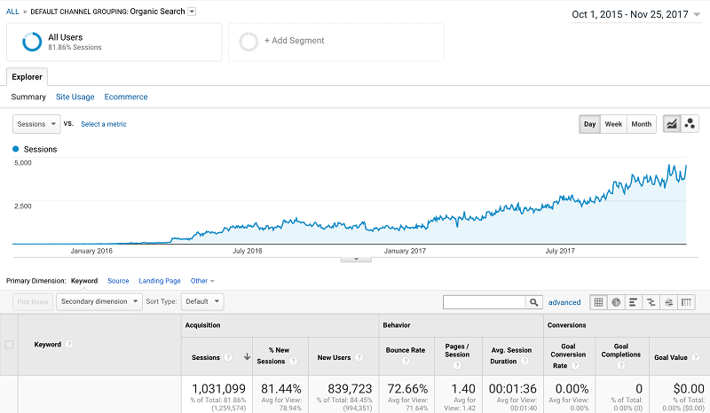
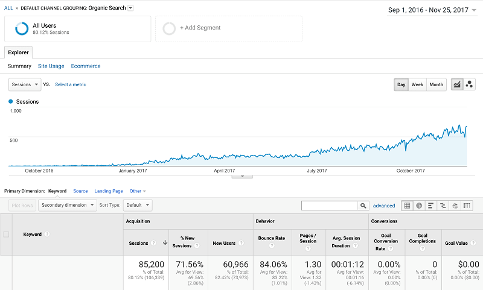
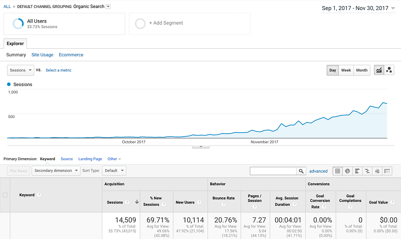

Corvelay is a two-man search engine optimization (SEO) shop based in Los Angeles, California. We do:
- Technical SEO audits + optimization
- On-site content creation and editorial link building
Technical SEO
Search engines and people view websites differently. Search engines primarily read the backend webcode (html, css, javascript). If this code is not properly formatted and structured, it will be confusing to the search engine (ie. google, bing, yahoo) even if it is clear and legible to the human viewer. Lining up these two 'views' is important because a site that cannot be read by search engines will not be ranked appropriately.
Additionally, finding the right keyword opportunities for your site is crucial to being in the right SERPS (search engine result pages). If you are missing out on relevant search terms for your website, you are not being found by potential customers.
We structure your site, from the foundational architecture to html markup, to create opportunities for people to find you in the search results. We make all possible site speed and mobile adjustments as well to improve the user experience across devices. The result is a clean, easy to understand and navigable website.
On-Site Content Creation and Editorial Link Building
Our ability to get PR level links, our understanding of who is searching what and where, and knowing how both visitors and search engines read your website allows us to rank higher and increase meaningful traffic.
- First, we find the search terms (ie. keywords) that are most beneficial for you to rank for. We take into account the goals of your business and the competitiveness of various SERPS. What are competitor sites ranking for? Where is the focus? What are the short-term and the long-term opportunities?
- Next, we create unique, valuable on-site content that is helpful, engaging and appropriate for your potential visitors.
- Lastly, we reach out to our network of journalists and writers to get high-quality, relevant and authoritative links to your site. High quality links are the basis for how search engines determine the 'authority' of your site, and thus its position in search results.
A small sample of editorials that have linked to our clients
We don't do everything, but when it comes to increasing organic traffic, we believe we do it better than anyone else.
About Us
Corvelay's origins are in pay per call affiliate marketing. We developed and ranked websites that now generate thousands of calls a day for lead brokers in industries ranging from dating to home services. Prior to that, we worked independently doing in-house SEO and advertising research.
Here are Google Analytics screenshots showing organic traffic improvements over time for three different websites we built and managed from the ground level.

